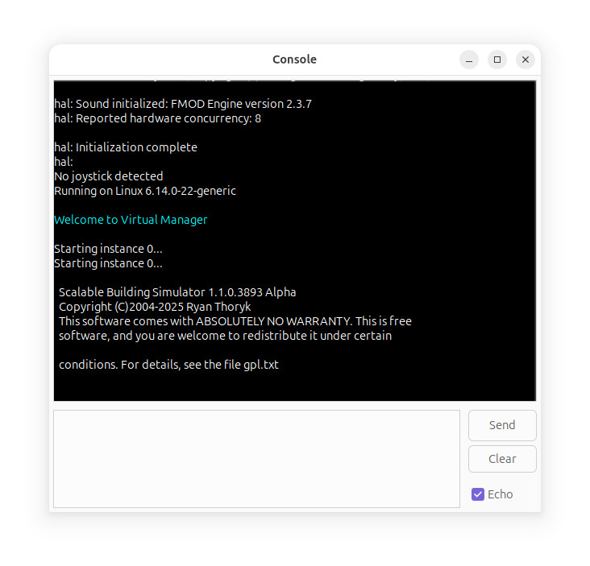

The Console is an interface to both Virtual
Manager, and the Script Processor. Virtual Manager allows
you to manage
the overall simulator itself, such as creating and deleting
simulator engines. The Script Processor allows you to
manage the simulator environment, from a single simulator
instance, such as creating walls and floors.

The console output will appear in the window, and will appear in
different colors if your operating system supports it.
Type commands into the box on the bottom, and click Send
to send them to the simulator.
The Clear button clears the text scrollback. The Echo
checkbox determines if the user's commands should be shown in
the console output.
Please note that VM currently only supports single lines at a
time, while the script processor supports multiple lines.
For a list of commands that VM supports, type "help" and click
Send.
For the script commands, see the script guide.
On Linux and Mac systems, the console can be switched off via
the INI file (skyscraper.ini), and the output will show up in a
terminal instead.